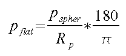

Then the velocity in cartesian Flat Earth Coordinates is

where zflat is the Flat Earth depth, which is given by

A major drawback of Newton's Law of Gravity is that it makes planets spherical. This means that we have to deal with angular coordinates and their poles and periodicities when describing things that move around in planets or on their surfaces. The equations of motions usually contain sines and tangents and the like, what makes them difficult to handle.
The Flat Earth Transform (Müller, 1977) is a coordinate transform which replaces a spherically layered velocity model (a model of concentric shells) by a horizontally flat layered model in cartesian coordinates which produces the same travel times. After applying the inverse transformation, ray geometry computed in the flat model gives the ray geometry for the spherical model.
Let the velocity vspher be given as function of depth
zspher below the surface of a planet with Radius
Rp:
Then the velocity in cartesian Flat Earth Coordinates is
where zflat is the Flat Earth depth, which is given by
Additionally, the ray parameter, which is usually given in seconds per degree has to
be transformed into seconds per Kilometer on a flat surface:

The inverse transformation is obtained by solving the above equations for the spherical quantities.
Obviously, the planet's center (where zspher=Rp and hence the argument of the Logarithm is infinite) is transformed to infinite depth. It is thus impossible to compute rays that go straight through the middle of the planet, and it causes numerical problems for rays that come close to the middle (because the inverse transformation has to deal with very large depth values then). The latter problem may be overcome by a sufficiently dense sampling at great depth.